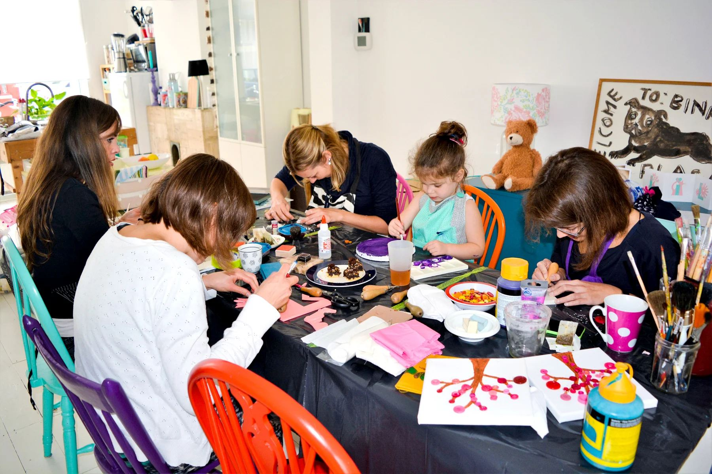
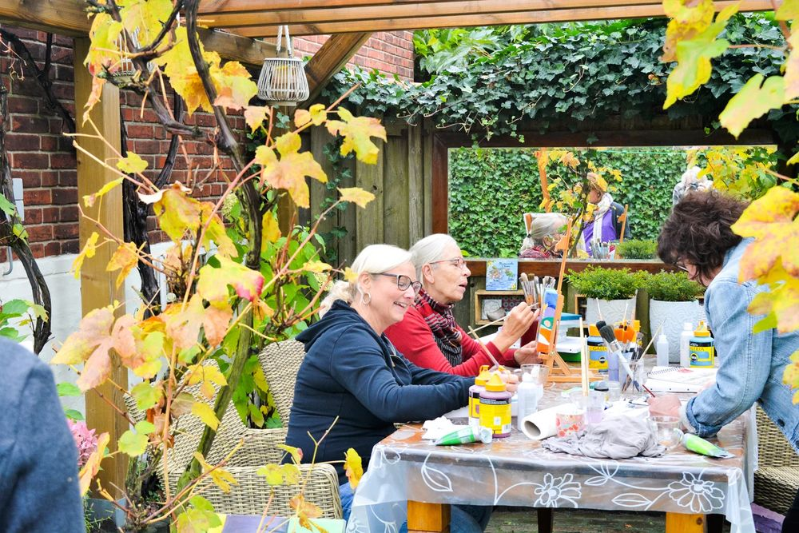
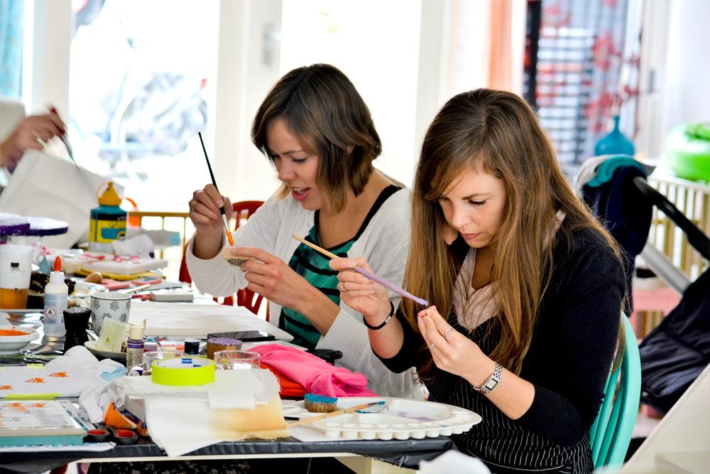
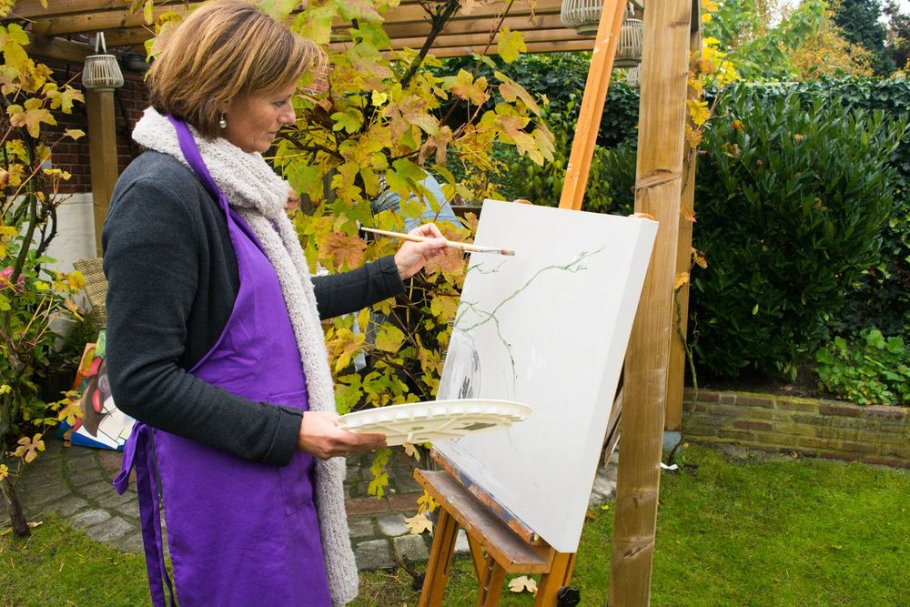
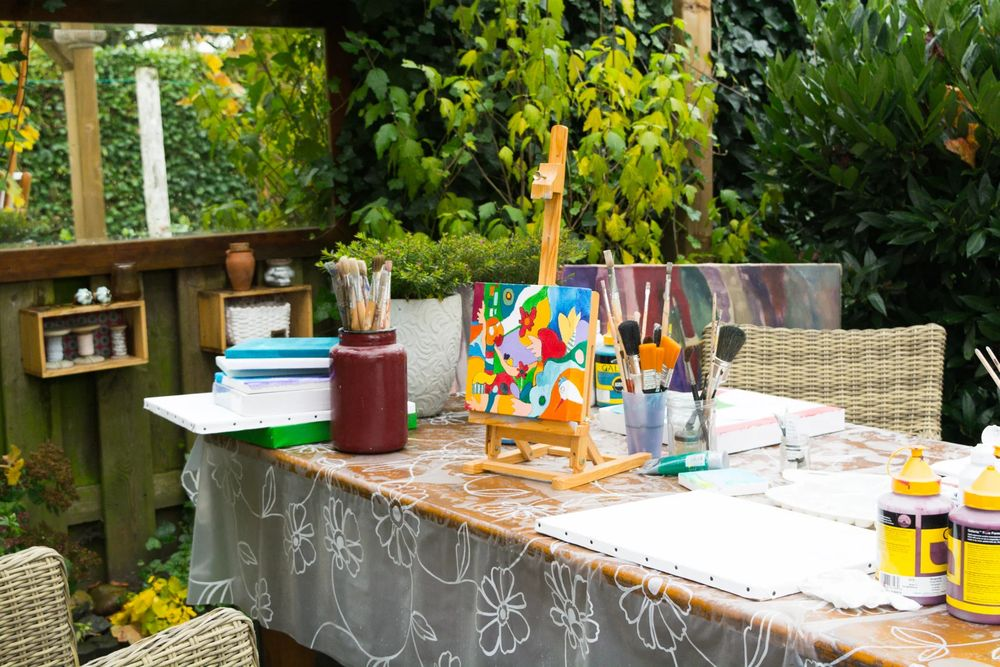
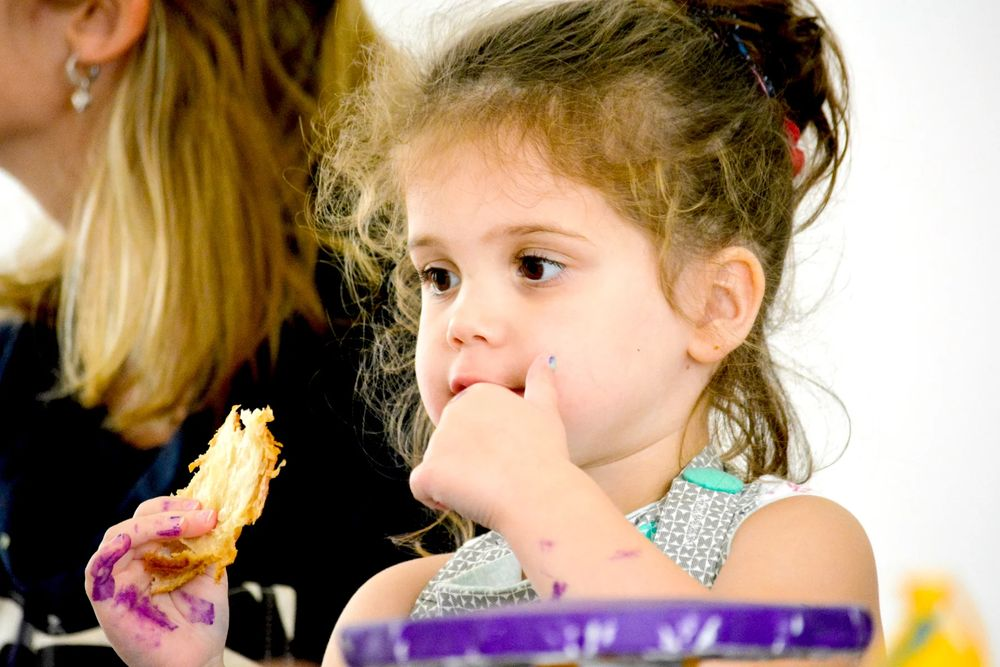
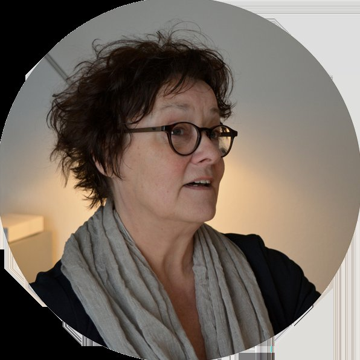

Keramiek
Schalen, potten, tegels, bloemen en vooral vrij werk. Ervaar wat je allemaal met natuurklei kunt.
Meestal als cursus
Workshops en cursussen in Bergen op Zoom: keramiek, porselein beschilderen, macramé, tekenen en schilderen of stof bedrukken. Voor jong en oud, met of zonder ervaring.
Grof werken of juist priegelen, groot of klein, veel kleur of ingetogen. Kies een techniek en ik help je waar het nodig is.
Schalen, potten, tegels, bloemen en vooral vrij werk. Ervaar wat je allemaal met natuurklei kunt.
Meestal als cursusMet porseleinverf, porseleinstiften of acrylverf aan de slag op aardewerk en porselein.
Muur- en raamdecoraties, plantenhangers, een tas of een kussenhoes.
Werken op doek met acrylverf, pastelkrijt, houtskool of gemengde technieken.
Maak je eigen stempel of sjabloon en druk af op stof: een sjaal, schort, kussenhoes, tas of T-shirt.
Ontdek het al doende. Ik heb mappen vol ideeën en voorbeelden, en foto's van werk dat cursisten door de jaren heen maakten.
Workshop aanvragen
Gezelligheid met de nodige humor!
Kleinschalig en gemoedelijk, voor jong en oud. Kom alleen, of met je familie of vriendengroep. Er is alle ruimte voor je eigen ideeën: het gaat om leren, delen en ontdekken wat je kunt.





"Ik wil voor mensen iets positiefs betekenen met een beetje ondeugendheid!"
Ik ben Loes Hermans, geboren en getogen in Bergen op Zoom. Als kind was ik al nieuwsgierig naar wat je allemaal met verschillende materialen kunt maken. Creatief bezig zijn en werken met mensen: dat is altijd mijn richting geweest.
Ik werkte 47 jaar als pedagogisch begeleider en activiteitencoach in de zorg, zette ateliers en exposities op en begeleidde projecten op scholen. Die ervaring met allerlei technieken en materialen neem ik mee in elke workshop.
Laat weten wat je wilt maken en met hoeveel personen je komt. Ik neem zo snel mogelijk contact met je op.
Vraag gerust wat er mogelijk is, ook als je nog niet weet welke techniek je kiest.